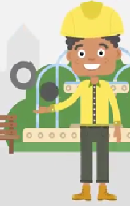
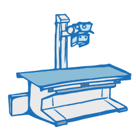
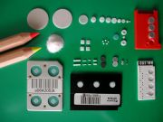
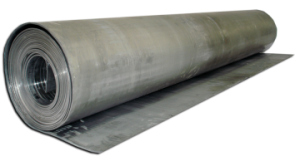
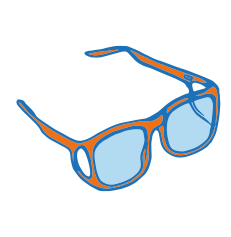
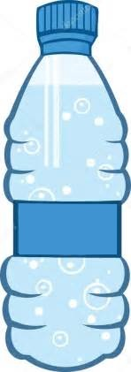
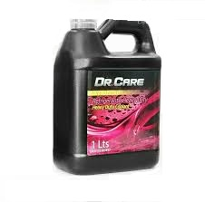

Servicios que brindamos:
- Servicios de Protección Radiológica
- Proyectos, Construcción y Adecuación de Espacios
- Servicios de Consultoría Especializada
- Venta de Dispositivos
- Suministros
Servicios de Protección Radiológica
Inspección
Se realiza informe de inspección de espacios, lo cual incluye evaluación y apoyo al personal administrativo, de ingeniería y de proyectos, con entrega de recomendaciones y posibles modificaciones en cuanto a flujo del paciente, señalización, déficit en elementos de protección radiológica, evaluación de ventana de visualización.
Cálculo de Blindaje
Este análisis se presenta en un informe
donde se especifican los responsables por el cálculo de dicho ambiente y
la Seguridad Radiológica del área necesaria con distintas posibilidades
y materiales para el blindaje.
Se requiere plano acotado del área y manual del equipo a comprar.
Es importante señalar que este cálculo aparte de ser obligatorio por ley, permite optimizar la compra del material y disminuir gastos.
Levantamiento Radiométrico
Se realizan mediciones sobre todas las barreras a fin de garantizar el blindaje adecuado de un ambiente.
El objetivo es evaluar los niveles de exposición ocupacional y del público. Sus indicadores son: Equivalente de dosis ambiental en mSv/año.
La frecuencia mínima: En la aceptación de la sala, cada cuatro años y después de modificaciones que afecten la protección radiológica
Oficial de Seguridad Radiológica
Ofrecemos solución integral en materia de protección radiológica, que va desde asesorías, gestión de procura, cálculos de blindaje, levantamiento radiométrico, desarrollo de manuales de normas y procedimientos, implementación de programa de capacitación continua tanto del personal médico, técnico y de enfermería; así como el control y seguimiento de la dosimetría de todo el personal.
Control de Calidad de los Equipos

Se realizan todas las medidas y controles de calidad del equipo basados en el Programa de Aseguramiento de la Calidad según lo establecido en la Norma Venezolana COVENIN 218-1 vigente.
Estas pruebas deben realizarse periódicamente, por lo menos 1 vez al año.
Asesoría en Permisología
Asesoría y apoyo en cuanto a los permisos requeridos por la institución para trabajar con Equipos Emisores de Radiación Ionizante.
1. RIMFRI
2. Conformidad Sanitaria de Ambientes Radiológicos
3. Permiso Sanitario para el Funcionamiento de Equipos de Radiodiagnóstico por Rayos X
Servicio de Dosimetría
Se proveen dosímetros TLD que permiten calcular la dosis de radiación a partir de los niveles de exposición de los trabajadores. Esta lectura se hace menualmente
Cursos, Talleres, Charlas y Programas de Capacitación Continua
Proyectos, Construcción y Adecuación de Espacios.
Diseño y Desarrollo de Proyectos y Elaboración de Planos de Arquitectura e Ingeniería
Construcción y Adecuación de Espacios
Venta y transporte de material de Blindaje
Una vez calculado el blindaje necesario se procede a la venta, suministro y traslado del material hasta el sitio de la obra.
Esta operación se hace respetando los estándares de embalaje y cuidado del material para segurar su calidad hasta el momento de la entrega.
Instalación del plomo y supervisión de acabados
Se realiza la instalación del plomo, todas las verificaciones y controles de calidad del blindaje, así como la certificación de solape en vértices o conjunción con vidrio; todo ésto basado en el Programa de Aseguramiento de la Calidad según lo establecido en la Norma Venezolana COVENIN 218-1 vigente.
Venta, instalación y mantenimiento de equipos radiológicos
Servicios de Consultoría Especializada
Análisis y Optimización de Flujo de Pacientes
Optimización y Automatización de Procesos
Análisis de Rentabilidad y toma de Desiciones
Análisis y Descripción de Estructura de Costos
Conferencias Gerenciales
Análisis, Captación y Desarrollo de Talento Humano
Venta de Dispositivos
Dispositivos de Almacenamiento

Dispositivos de Protección Radiológica

Material Médico Quirúrgico y Descartable
Dosímetros
Material de Blindaje
Equipos de Radiología
Señalizaciones

Suministros
Agua desionizada

Refrigerantes

Discos Regrabables
Películas Radiográficas
Chasis Radiográficos
Revelador
Fijador